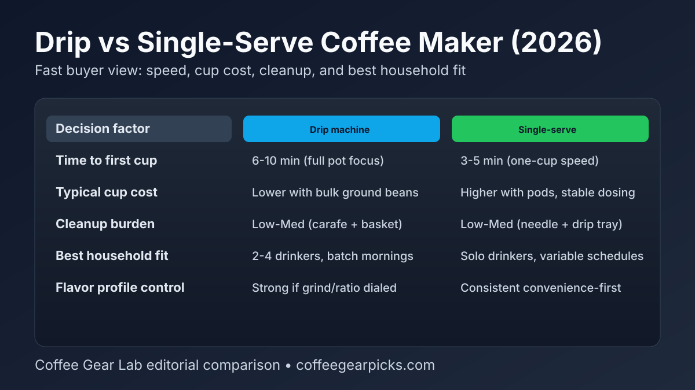

Drip vs Single-Serve Coffee Maker (2026): Fast Buyer Decision Guide
Both machine types can make decent coffee, but they solve different problems. If you brew for multiple people and care about lower per-cup cost, drip usually wins. If you prioritize one-cup speed and low decision friction, single-serve is often the better fit.

Quick answer: Buy a drip coffee maker if you usually brew 2+ cups per session and want lower running cost with bulk coffee. Buy a single-serve machine if you need faster one-cup convenience, cleaner weekday workflows, or flexible drink choices with minimal prep.
Side-by-side comparison
| Decision factor | Drip coffee maker | Single-serve coffee maker |
|---|---|---|
| Best for | 2-4 drinkers, batch brewing, lower cup cost | Solo drinkers, varied schedules, one-cup convenience |
| Time to first cup | ~6-10 min (full-pot design) | ~3-5 min (single-cup design) |
| Per-cup running cost | Usually lower with ground beans + paper filters | Higher with pods; moderate with reusable pod workflows |
| Flavor ceiling | High when ratio, grind, and water temp are controlled | Consistent and convenient, less tweakability by default |
| Cleanup burden | Low-Medium (basket, carafe, periodic descale) | Low-Medium (needle path, pod area, drip tray) |
| Counter footprint | Medium-Large | Small-Medium |
| Ownership friction | Refill less often, brew more at once | Refill/empty less brew waste, but more frequent small tasks |
Workflow realism: speed, refill cadence, cleanup
Drip machines feel slower at first cup, but they are efficient when your household drinks multiple cups in a short window. Single-serve machines win for irregular schedules and quick solo brews, especially when different people want different cup sizes or roast styles.
If you are choosing between fresh-ground and pod-heavy workflows, compare our best single-serve coffee maker with grinder picks and best coffee maker with grinder + K-Cup combo roundup.
Cost per cup and long-term ownership reality
Drip usually wins long-term cost when you brew regularly using ground coffee. Single-serve often wins convenience when waste reduction and decision speed matter more than pure cost-per-cup math.
Budget-conscious buyers should start with our best drip coffee maker under $100 guide. If your priority is one-cup speed with fresh beans, use best coffee maker with grinder for stronger flavor-first options.
Buy this if... / Skip this if...
Drip coffee maker
Buy this if... you brew for multiple people, want lower per-cup cost, and prefer predictable batch routines.
Skip this if... your schedule is unpredictable and you mostly make one cup at a time.
Single-serve coffee maker
Buy this if... you need fast one-cup convenience and value low-friction mornings over absolute lowest cup cost.
Skip this if... your home regularly needs full-carafe volume and you dislike pod-related upkeep.
Best next step by buyer type
- Batch-first household: Start with Best Drip Coffee Maker Under $100.
- One-cup speed-first buyer: Start with Best Single-Serve Coffee Maker with Grinder.
- Mixed bean + pod household: Use Best Coffee Maker with Grinder and K-Cup Combo.
- Flavor-first but still automated: Compare with Best Coffee Maker with Grinder.
- Consistency tuning: Lock extraction with the coffee brewing ratio guide.
FAQ
Which is cheaper long-term: drip or single-serve?
Drip is usually cheaper long-term because bulk ground coffee costs less per cup than pods. Single-serve can still be reasonable when convenience and reduced brew waste matter most.
Do single-serve machines always make worse coffee than drip?
Not always. High-quality single-serve machines can be consistent and tasty, but drip setups usually offer a higher flavor ceiling when grind, ratio, and water quality are dialed in.
What is better for families: drip or single-serve?
Drip is better for most families because it handles multi-cup demand with less repeated effort. Single-serve fits households with staggered routines and different drink preferences.
Can one machine handle both drip and pod workflows?
Some hybrid machines can. If you need both modes regularly, see our beans + K-Cup combo guide for realistic trade-offs.
How often should I descale each type?
For both types, descale every 1-3 months depending on water hardness and usage. Hard-water homes usually need a shorter cadence to keep flow rate and flavor stable.